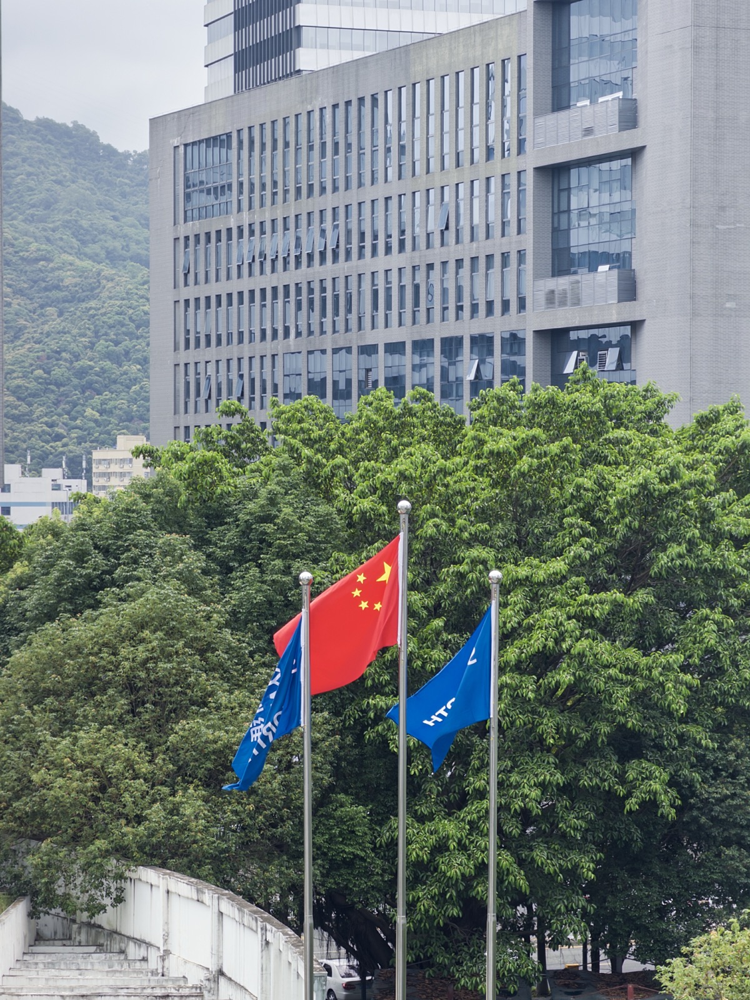
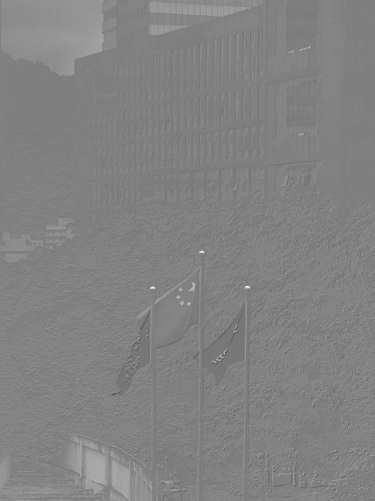
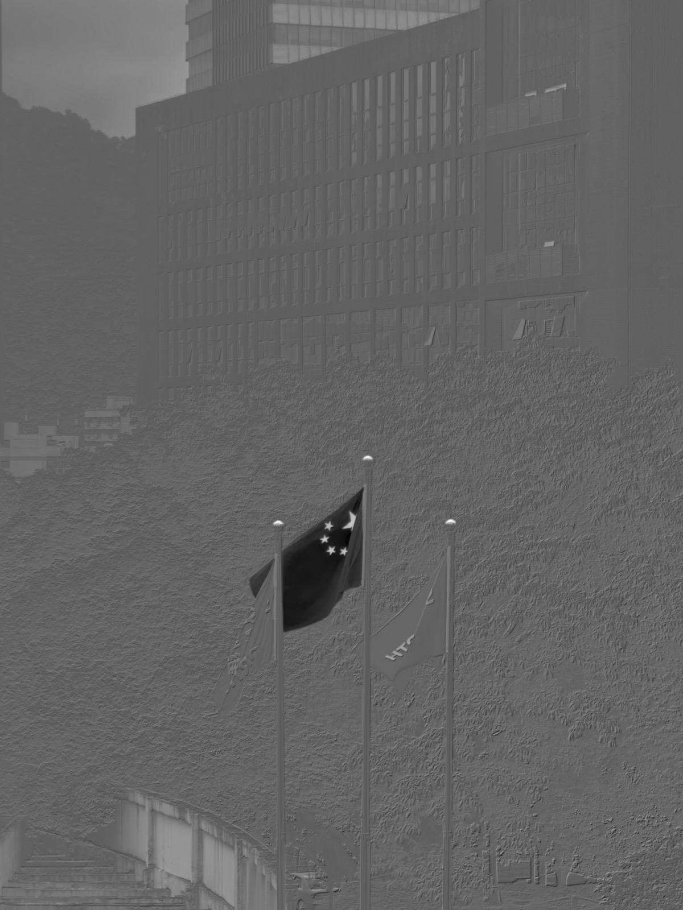
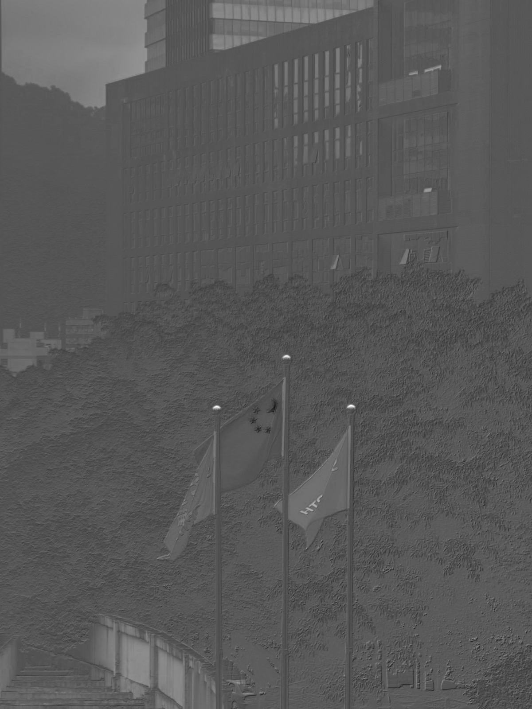
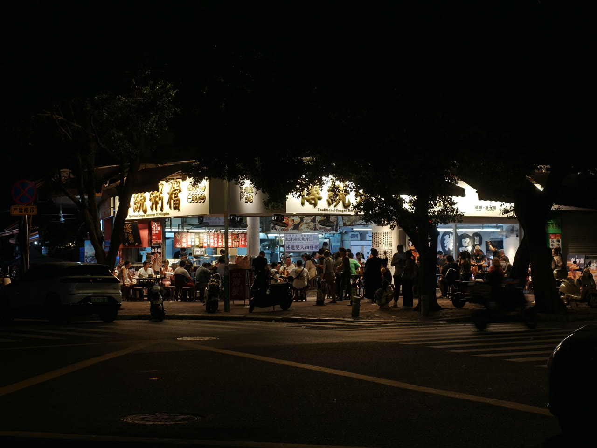
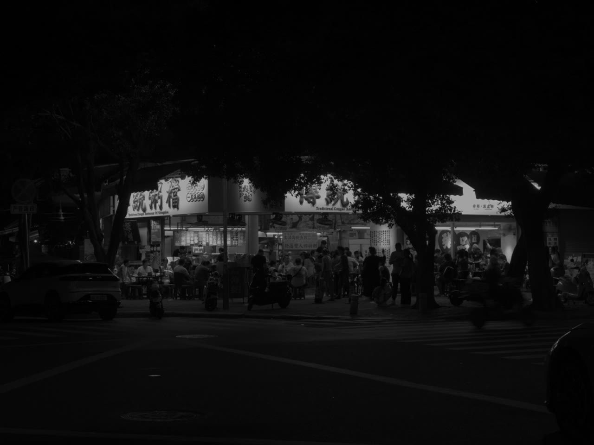

一张 HDR 照片
怎么变成一段 HDR 视频How a HDR Photo
Becomes a HDR Video
想法是从一个矛盾开始的The idea started from a contradiction
矛盾是这样的：手机拍的 HDR 照片，在手机屏上高光透亮、明暗层次都在；可一想搬到客厅那台 HDR 电视的大屏上看，就尴尬了——电视明明播 HDR 视频（HDR10）毫无压力，却偏偏认不出这种带增益图的 HDR 照片，要么当成普通 SDR 图显示、HDR 效果当场全丢，要么干脆打不开。设备有 HDR 显示的本事，却因为「照片」这个格式用不上。 Here's the contradiction: an HDR photo shot on a phone looks great on the phone screen — bright highlights, full tonal range. But move it to the big HDR TV in the living room and it gets awkward. The TV plays HDR video (HDR10) without any trouble, yet it can't recognize this gain-map HDR photo — either showing it as an ordinary SDR image with the HDR effect lost entirely, or failing to open it at all. The device has HDR display capability but can't use it, all because of the "photo" format.
电视点不亮 HDR 照片The TV can't light up HDR photos
同一台 HDR 电视，播 HDR10 视频毫无压力，可它的相册 / 图片浏览根本不认带增益图的 HDR 照片——只能当普通 SDR 图显示，或者直接打不开。屏幕有 HDR 能力，却因为「照片」这个格式用不上。 The same HDR TV plays HDR10 video without issue, but its gallery / image viewer doesn't recognize gain-map HDR photos at all — it can only show them as ordinary SDR images, or fails to open them. The screen has HDR capability but can't use it because of the "photo" format.
增益图里就存着 HDRThe HDR lives in the gain map
手机存的其实是「一张 SDR 图 + 一张增益图（Gain Map）」。HEIC 里是 Apple 的 tmap，UltraHDR JPEG 里是 hdrgm: 命名空间，本质都是「逐像素的 log2 提亮量」。两层合起来才是完整 HDR。
What the phone stores is really "one SDR image + one gain map". In HEIC it's Apple's tmap; in UltraHDR JPEG it's the hdrgm: namespace — both are essentially "per-pixel log2 boost amounts". The two layers together make the full HDR.
HDR 视频兼容性最好HDR video has the best compatibility
静态 HDR 格式（JXL）电视基本不认，但 H.265 HDR10 的 MOV 在电视、QuickTime、剪辑软件里都能直接放。把一张 HDR 照片做成静止 HDR 视频，就能直接用上电视本来就支持的 HDR 视频解码。 Static HDR formats (JXL) are mostly unrecognized by TVs, but an H.265 HDR10 MOV plays directly on TVs, in QuickTime, and in editing software. Turning a HDR photo into a still HDR video reuses the HDR video decoding the TV already supports.
把流程拆成五个能单独测的模块Splitting the pipeline into five independently testable modules
核心是一个 C++ 引擎 hdr2jxl，外面套一层 Flask + WKWebView 的本地界面。引擎按「一件事一个文件」拆开，每个环节都能单独喂数据、单独验证，避免一条长函数从头错到尾。
At the core is a C++ engine hdr2jxl, wrapped in a local Flask + WKWebView interface. The engine is split "one job per file", so every stage can be fed data and verified on its own — avoiding one long function that goes wrong from start to finish.
格式检测 + 解码Format detect + decode
heic_reader / jpeg_reader：认出格式，拆出 base 层、增益图、元数据heic_reader / jpeg_reader: identify the format, extract the base layer, gain map, and metadata
增益图 → 线性 HDRGain map → linear HDR
gainmap：按 log2 公式把 SDR 提亮成线性光gainmap: boost SDR to linear light via the log2 formula
线性 → PQLinear → PQ
SMPTE ST 2084 绝对亮度编码，并写入 HDR10 色彩标签SMPTE ST 2084 absolute-luminance encoding, plus writing HDR10 color tags
JXL / HEVC
jxl_writer 出静态图；video_writer 调 ffmpeg 出视频jxl_writer produces the still image; video_writer calls ffmpeg for video
导出中间层Export intermediate layers
image_writer：base 层 + 增益图灰度，供核对image_writer: base layer + gain-map grayscale, for verification
读取层只负责「拆」The read layer only "unpacks"
判断是 HEIC 还是 JPEG，把 base 图、增益图、元数据（gamma、hdrCapacityMin/Max、offset）原样吐出来，不做任何亮度计算。读取出错就早退，不让坏数据流进算法。Decide whether it's HEIC or JPEG, and emit the base image, gain map, and metadata (gamma, hdrCapacityMin/Max, offset) as-is, doing no luminance math. On a read error it bails early, so bad data never flows into the algorithm.
合并层是唯一的「数学中心」The merge layer is the only "math center"
所有亮度相关的公式都集中在 gainmap.cpp：增益合并、sRGB↔线性、PQ↔线性、HLG↔线性。后面所有 bug 几乎都在这里改，集中放好处巨大。All luminance-related formulas live in gainmap.cpp: gain merging, sRGB↔linear, PQ↔linear, HLG↔linear. Almost every later bug was fixed here — concentrating it pays off enormously.
写出层只负责「编码 + 容器」The write layer only does "encode + container"
JXL 走 libjxl，写入 PQ / HDR 色彩信息；视频走 ffmpeg，补齐 HDR10 的编码与容器标签。写出层不重新调亮度，只把已经算好的线性 HDR 编进文件。JXL goes through libjxl, writing PQ / HDR color info; video goes through ffmpeg, filling in HDR10 encoding and container tags. The write layer doesn't re-adjust luminance — it just encodes the already-computed linear HDR into the file.
主程序只做编排The main program only orchestrates
Main.cpp 解析参数、串起读取→合并→写出，并且无论成不成功都导出 base 层和增益图。这条「总是导出旁证」的设计，是后面定位过曝 bug 的关键。Main.cpp parses arguments, chains read→merge→write, and always exports the base layer and gain map whether or not it succeeds. This "always export the evidence" design was key to later tracking down the overexposure bug.
增益图合并：一条指数公式Gain-map merge: a single exponential formula
增益图的值是 0–1 的归一化数，代表「在最小和最大提亮量之间插到哪」。真正的提亮是 2 的指数次方——这点决定了后面所有调参都得在 log2 域里做。 The gain-map value is a normalized number from 0–1, representing "where to interpolate between the minimum and maximum boost". The actual boost is 2 raised to a power — which is why all later tuning must happen in the log2 domain.
实现上逐像素跑这条公式，刻意不把结果裁剪到 1.0 以内——超过 1.0 的部分正是 HDR 高光，裁掉就退回 SDR 了。算完线性 HDR，再用 PQ（SMPTE ST 2084）曲线编码进 16-bit，交给 JXL 或 ffmpeg。 The implementation runs this formula per pixel and deliberately does not clamp the result to within 1.0 — the part above 1.0 is exactly the HDR highlights; clamping it falls back to SDR. After computing linear HDR, it encodes into 16-bit via the PQ (SMPTE ST 2084) curve, handed off to JXL or ffmpeg.
// gainmap.cpp — 合并的核心循环（节选） float log2Gain = gain * (capMax - capMin) + capMin; // 映射到 log2 提亮量 float factor = std::pow(2.0f, log2Gain); // 指数 → 线性增益因子 float hdr = base * factor + offsetHdr; hdrImage[idx] = std::max(0.0f, hdr); // 只保非负，不裁上限（保住高光）
// gainmap.cpp — core merge loop (excerpt) float log2Gain = gain * (capMax - capMin) + capMin; // map to the log2 boost amount float factor = std::pow(2.0f, log2Gain); // exponent → linear gain factor float hdr = base * factor + offsetHdr; hdrImage[idx] = std::max(0.0f, hdr); // keep non-negative only, no upper clamp (preserve highlights)
难的不是算，是先把增益图找出来The hard part isn't the math — it's finding the gain map first
三家厂商把增益图藏在三个不同的地方。读取层要足够健壮：标准路径走不通时要有退路，否则一张被压过的图就让整个转换失败。 Three vendors hide the gain map in three different places. The read layer must be robust enough: when the standard path fails, it needs a fallback, or one re-compressed image breaks the whole conversion.
tmap 辅助图tmap auxiliary image
遍历 HEIF 容器里的 item，按 fourcc 't','m','a','p' 找到增益图项，单独解码成单通道亮度图。位深可能是 8/10/12/16 位，按最大值归一化到 0–1。
Walk the items in the HEIF container, find the gain-map item by fourcc 't','m','a','p', and decode it separately into a single-channel luminance map. Bit depth may be 8/10/12/16-bit; normalize to 0–1 by the max value.
XMP + 内嵌 JPEGXMP + embedded JPEG
从 hdrgm: 命名空间正则提取 gamma、capacity、offset；增益图本身是文件尾部第二张内嵌 JPEG，靠 Container:Item 长度定位。
Regex-extract gamma, capacity, and offset from the hdrgm: namespace; the gain map itself is a second JPEG embedded at the end of the file, located via the Container:Item length.
双阶段定位Two-stage location
优先用 MPF 段里的绝对偏移直接跳到增益图；MPF 缺失或被改写时，退回全文件扫描 JPEG 起始标记（0xFFD8）找第二张图。两条路都留着。
Prefer the absolute offset in the MPF segment to jump straight to the gain map; when MPF is missing or rewritten, fall back to scanning the whole file for the JPEG start marker (0xFFD8) to find the second image. Both paths are kept.
- 症状Symptom
- 增益图像素数和主图对不上，直接套用就错位甚至崩溃。The gain map's pixel count doesn't match the main image; applying it directly causes misalignment or even a crash.
- 原因Cause
- 为省空间，厂商常把增益图存成主图的 1/2 或 1/4 分辨率。To save space, vendors often store the gain map at 1/2 or 1/4 the resolution of the main image.
- 修复Fix
- 读取层先把增益图双线性放大到主图尺寸再交给合并层，让后续逐像素公式能直接一一对齐。The read layer bilinearly upscales the gain map to the main image's size before handing it to the merge layer, so the per-pixel formula aligns one-to-one.
彩色高光不只是更亮，还要把颜色救回来Colored highlights aren't just brighter — the color has to be brought back
普通单通道 Gain Map 只回答一个问题：这个像素该提亮多少。RGB 三通道 Gain Map 多回答了两个问题：红、绿、蓝分别该提多少，以及哪个通道曾经在 SDR base 里被截断得更严重。对霓虹、屏幕、夕阳、车灯、强光下肤色这类彩色高光来说，这个差别非常大。 An ordinary single-channel gain map answers one question: how much should this pixel be brightened. An RGB three-channel gain map answers two more: how much should red, green, and blue each be boosted, and which channel was clipped more severely in the SDR base. For colored highlights like neon, screens, sunsets, car lights, and skin under strong light, this difference is large.




这张 IDG_2026061_RGBGainmap.jpg 的元数据显示，拍摄设备为 Apple iPhone 17 Pro；文件封装是 JPEG + MPF 内嵌第二张 JPEG 的 Gain Map 结构，并同时带有 Adobe hdrgm: XMP 与 ISO 21496 标记。它的增益图不是一张灰度图复制三遍，而是 RGB 三通道 Gain Map：R、G、B 各自有不同的增益范围，在每个颜色通道上分别记录「还应该往 HDR 里抬多少」。这对彩色高光很关键，因为 SDR 截断通常不是三个通道一起、均匀地撞顶。
This IDG_2026061_RGBGainmap.jpg's metadata shows the capture device as Apple iPhone 17 Pro; the file is wrapped as JPEG + an MPF-embedded second JPEG gain-map structure, carrying both Adobe hdrgm: XMP and ISO 21496 markers. Its gain map isn't one grayscale image copied three times, but an RGB three-channel gain map: R, G, and B each have their own gain range, separately recording "how much further to lift toward HDR" in each color channel. This matters for colored highlights, because SDR clipping usually doesn't hit all three channels together and evenly.
SDR 截断会让颜色失真SDR clipping distorts color
彩色高光进入 SDR base 时，可能是红通道先撞顶，也可能是绿、蓝被压得更多。三通道被不同程度截断后，原来的色相和饱和度就被压平了，画面看起来会发白、褪色。 When colored highlights enter the SDR base, the red channel may hit the ceiling first, or green/blue may be compressed more. Once the three channels are clipped to different degrees, the original hue and saturation are flattened and the image looks washed-out and faded.
单通道只能提亮，不能解截断A single channel can only brighten, not undo clipping
单通道 Gain Map 给 RGB 同一个倍数，只能把已经褪色的高光整体抬亮。亮度回来了，但被压坏的通道比例没有回来，所以彩色灯牌、屏幕和夕阳容易变成「亮，但没颜色」。 A single-channel gain map gives RGB the same multiplier, so it can only lift the already-faded highlights as a whole. Brightness comes back, but the ratio of the damaged channels doesn't — so colored signs, screens, and sunsets tend to become "bright but colorless".
三通道能重建颜色比例Three channels can rebuild color ratios
RGB Gain Map 可以让每个通道按自己的轨迹恢复：该补红就补红，该补蓝就补蓝。它做的不是简单调饱和度，而是在 HDR 合成阶段把被 SDR base 截断的颜色关系重新拉开。 An RGB gain map lets each channel recover along its own trajectory: add red where red is needed, add blue where blue is needed. It isn't simply adjusting saturation — it re-separates the color relationships clipped by the SDR base during HDR compositing.
还有一个感知层面的理由：Hunt 效应。人眼在更高亮度下，会期待颜色看起来更鲜艳；真实世界里的霓虹、LED 屏、夕阳和强反射也确实常常又亮又有色。如果 HDR 只把高光亮度提上去，却保留 SDR 截断后的低饱和颜色，视觉上就会显得「亮但脏」「亮但假」。三通道 Gain Map 同时补亮度和通道比例，才更接近这些彩色高光本来该有的样子。 There's also a perceptual reason: the Hunt effect. At higher luminance, the eye expects colors to look more saturated; real-world neon, LED screens, sunsets, and strong reflections are indeed often both bright and colorful. If HDR only raises highlight brightness while keeping the low-saturation color left by SDR clipping, it looks "bright but dirty", "bright but fake". A three-channel gain map restores both brightness and channel ratios, getting closer to how these colored highlights should look.
真正的算法，是被导出结果逼出来的The real algorithm was forced out by the exported results
- 症状Symptom
- 导出的 JXL / 视频整体过亮，本该是参考白的区域亮得发光。The exported JXL / video is overall too bright; areas that should be reference white glow.
- 原因Cause
- PQ 是绝对亮度曲线，线性 1.0 = 10000 nits。直接把 sRGB 满亮度 1.0 喂进 PQ，等于把「纸面白」当成了 10000 nits 的超亮高光。PQ is an absolute-luminance curve, linear 1.0 = 10000 nits. Feeding sRGB full brightness 1.0 straight into PQ treats "paper white" as a 10000-nit ultra-bright highlight.
- 修复Fix
- 合并前先把 base 层锚定到 SDR 参考白：乘以
sdrWhiteNits / 10000。203 nits 来自 ITU-R BT.2408 / libultrahdr 推荐值，让「SDR 1.0」对应到 PQ 的 203 nits 而不是满量程。Before merging, anchor the base layer to SDR reference white: multiply bysdrWhiteNits / 10000. The 203 nits comes from the ITU-R BT.2408 / libultrahdr recommended value, mapping "SDR 1.0" to PQ's 203 nits rather than full scale.
// 改前：sRGB 1.0 直接进 PQ → 被当成 10000 nits，全图过曝 float baseR = baseImage[idx]; // 改后：先把 SDR 参考白锚到 203 nits 的绝对亮度位置 const float k = sdrWhiteNits / 10000.0f; // 203 / 10000 float baseR = baseImage[idx] * k;
// Before: sRGB 1.0 straight into PQ → treated as 10000 nits, whole image overexposed float baseR = baseImage[idx]; // After: anchor SDR reference white to the absolute position of 203 nits first const float k = sdrWhiteNits / 10000.0f; // 203 / 10000 float baseR = baseImage[idx] * k;
这个数不是靠肉眼试出来的调色参数，而是把 SDR base 的相对参考白接到 PQ 绝对亮度坐标里的锚点。BT.2408 和 libultrahdr 都把 HDR 参考白放在 203 nits；没有这个锚点，SDR 的 1.0 会被 PQ 当成 10000 nits，整张图自然过曝。 This number isn't a color-grading parameter found by eye, but the anchor that ties the SDR base's relative reference white to PQ's absolute-luminance coordinates. Both BT.2408 and libultrahdr place HDR reference white at 203 nits; without this anchor, SDR's 1.0 is treated by PQ as 10000 nits and the whole image naturally overexposes.
同一张 OPPO UltraHDR 原图，分别用「漏掉锚定」的旧算法和修好的算法转成 HDR 视频，差别一眼可见——左边整屏发光、招牌和路面全糊成一片白，右边夜景层次正常、只有灯箱该亮的地方亮： The same OPPO UltraHDR original, converted to HDR video with the old algorithm that "skipped the anchor" versus the fixed one, shows an obvious difference — the left glows across the whole screen with signage and road blurred into white, the right has normal night-scene tonality with only the light boxes bright where they should be:
注：两段都是真正的 HDR10（HEVC / PQ / BT.2020）视频。在 HDR 屏上差距更夸张；这里看到的已是浏览器把 HDR 压回 SDR 后的效果，过曝那条仍然惨白。Note: both clips are genuine HDR10 (HEVC / PQ / BT.2020) video. The gap is even more dramatic on a HDR screen; what you see here is already the browser tone-mapping HDR back to SDR, yet the overexposed one is still washed white.
- 症状Symptom
- 增益强度 = 1（完整 HDR）正常，可一拖到 0（纯 SDR）画面又爆掉。At gain strength = 1 (full HDR) it's fine, but dragging to 0 (pure SDR) blows out again.
- 原因Cause
- 强度为 0 时为了省事走了一条快捷分支，忘了同样乘
sdrWhiteNits/10000，于是 sRGB 1.0 又变回 10000 nits。两条代码路径不一致。At strength 0, a shortcut branch was taken for convenience that forgot to also multiply bysdrWhiteNits/10000, so sRGB 1.0 became 10000 nits again. The two code paths were inconsistent. - 修复Fix
- 让所有强度分支共用同一个
k = sdrWhiteNits/10000系数，保证 0、1 和中间值落在同一套亮度坐标里。Make all strength branches share the samek = sdrWhiteNits/10000coefficient, so 0, 1, and intermediate values land in the same luminance coordinate system.
- 症状Symptom
- 增益强度取 0.5 这类中间值时，高光过渡浑浊，不像「一半 HDR」。At intermediate values like gain strength 0.5, the highlight transition is muddy, not like "half HDR".
- 原因Cause
- 一开始在像素值上线性插值（(1−s)·SDR + s·HDR）。但提亮是 2 的指数关系，对指数结果做线性混合会破坏曝光的几何级数。At first it linearly interpolated on pixel values ((1−s)·SDR + s·HDR). But the boost is a power-of-2 relationship, and linearly blending exponential results breaks the geometric progression of exposure.
- 修复Fix
- 把插值挪到 log2 域：直接缩放指数
log2Gain × gainStrength，再做2^。强度 0 = 不提亮，强度 1 = 完整提亮，中间是平滑的曝光过渡。Move the interpolation to the log2 domain: scale the exponent directly withlog2Gain × gainStrength, then apply2^. Strength 0 = no boost, strength 1 = full boost, with a smooth exposure transition in between.
// 在指数上插值，而不是在像素上插值 float log2Gain = gain * (capMax - capMin) + capMin; log2Gain *= gainStrength; // ← 关键：缩放的是指数 float factor = std::pow(2.0f, log2Gain);
// Interpolate on the exponent, not on the pixel float log2Gain = gain * (capMax - capMin) + capMin; log2Gain *= gainStrength; // ← key: it's the exponent being scaled float factor = std::pow(2.0f, log2Gain);
- 症状Symptom
- ffmpeg 编出来的 MOV，QuickTime 要么打不开，要么当成普通 SDR 播放。The MOV encoded by ffmpeg either won't open in QuickTime or plays as ordinary SDR.
- 原因Cause
- QuickTime 只认
hvc1标签的 HEVC（不认默认的hev1），而且必须带齐 HDR10 的颜色元数据才会进 HDR 通路。QuickTime only recognizes HEVC taggedhvc1(not the defaulthev1), and it needs the full HDR10 color metadata to enter the HDR path. - 修复Fix
- 编码时显式加
-tag:v hvc1、用 10-bitp010le，并补全 BT.2020 / ST.2084 / BT.2020-ncl 三件套。Explicitly add-tag:v hvc1during encoding, use 10-bitp010le, and fill in the BT.2020 / ST.2084 / BT.2020-ncl trio.
# 让 QuickTime 认得、且走 HDR10 通路的关键参数 ffmpeg -loop 1 -i tmp.jxl \ -c:v hevc_videotoolbox -profile:v main10 -pix_fmt p010le \ -tag:v hvc1 \ -color_primaries bt2020 -color_trc smpte2084 -colorspace bt2020_ncl ...
# Key parameters so QuickTime recognizes it and uses the HDR10 path ffmpeg -loop 1 -i tmp.jxl \ -c:v hevc_videotoolbox -profile:v main10 -pix_fmt p010le \ -tag:v hvc1 \ -color_primaries bt2020 -color_trc smpte2084 -colorspace bt2020_ncl ...
- 症状Symptom
- JXL 文件能写出来，但解码时颜色错乱 / 花屏。The JXL file writes out, but colors are scrambled / garbled on decode.
- 原因Cause
- basic_info 里声明的位深，必须和实际像素的数据类型严格对应；混用 16-bit 声明 + float 数据会让解码器按错误布局读取。The bit depth declared in basic_info must strictly match the actual pixel data type; mixing a 16-bit declaration with float data makes the decoder read with the wrong layout.
- 修复Fix
- 分成两条干净的路径：16-bit 走整型量化（
uint16），32-bit 走浮点（JXL_TYPE_FLOAT），声明与数据一一对应。Split into two clean paths: 16-bit uses integer quantization (uint16), 32-bit uses float (JXL_TYPE_FLOAT), declaration matching data one-to-one.
静态图怎么变成 HDR10 视频How a still image becomes a HDR10 video
没有自己写 H.265 编码器，而是复用已经算好的线性 HDR：先落一张临时 JXL，再用 ffmpeg 把这张图「循环」成一段静止视频，并打上完整的 HDR10 颜色标签。 Rather than writing a H.265 encoder, it reuses the already-computed linear HDR: first drop a temporary JXL, then use ffmpeg to "loop" that image into a still video, stamped with full HDR10 color tags.
先出一张临时 HDR 图First produce a temporary HDR image
用和静态导出完全相同的 JXL 写出逻辑生成临时文件，保证视频和图片的亮度处理一字不差。Generate the temp file with exactly the same JXL write logic as the static export, ensuring video and image luminance handling are identical to the letter.
ffmpeg 循环成视频ffmpeg loops it into video
-loop 1 把单帧重复成指定时长和帧率，编成 H.265 main10，像素格式 p010le。-loop 1 repeats the single frame to the chosen duration and frame rate, encoding H.265 main10, pixel format p010le.
打满 HDR10 颜色三件套Stamp the full HDR10 color trio
color_primaries bt2020 + color_trc smpte2084 + colorspace bt2020_ncl，少一个播放器就不认 HDR。color_primaries bt2020 + color_trc smpte2084 + colorspace bt2020_ncl — miss one and the player won't recognize HDR.
硬件优先，软件兜底Hardware first, software fallback
先试 Apple hevc_videotoolbox 硬件编码；失败就自动回退到 libx265 软件编码，慢但稳。Try Apple hevc_videotoolbox hardware encoding first; on failure, automatically fall back to libx265 software encoding — slower but reliable.
拆开看：HDR 其实是两层叠出来的Taken apart: HDR is really two layers stacked
还是这张 OPPO UltraHDR 原图，导出它内部的两个中间层就能看清 HDR 是怎么合成出来的——SDR base 层是普通屏幕能显示的部分（参考白封顶、招牌已经有点发灰），增益图是一张灰度图，记录每个像素还要往上提多少 stop：灰度越亮提得越多。两层按指数公式 base × 2g 相乘，灯箱、招牌就被抬到 SDR 顶不住的亮度，得到下面那段 HDR 视频。
Same OPPO UltraHDR original — exporting its two internal intermediate layers makes clear how HDR is composited. The SDR base layer is the part an ordinary screen can show (capped at reference white, the signage already a little gray); the gain map is a grayscale image recording how many more stops each pixel should be lifted: brighter gray means more boost. The two are multiplied by the exponential formula base × 2g, lifting the light boxes and signs to a brightness SDR can't hold, giving the HDR video below.


注意增益图里发亮的区域，正好对应成品里冲破 SDR 上限的高光——这就是「base 决定底色、增益图决定哪里该更亮」。Notice the bright areas in the gain map correspond exactly to the highlights that break the SDR ceiling in the result — this is "the base sets the ground color, the gain map decides where it should be brighter".
把这两层按 203 nits 锚定 + PQ 编码合并，再循环成视频，就是整条流水线跑通后的成品：Merge these two layers with 203-nit anchoring + PQ encoding, then loop into video, and you get the finished output of the whole pipeline running end to end:
真正的 HDR10（HEVC / PQ / BT.2020）视频。在支持 HDR 的屏幕上，灯箱和高光会冲破 SDR 上限真正「亮」起来；这里是浏览器压回 SDR 后的预览。下一节就从这段视频回看——同一条算法稍微写错一步，画面会变成什么样。Genuine HDR10 (HEVC / PQ / BT.2020) video. On a HDR-capable screen the light boxes and highlights break the SDR ceiling and truly "light up"; here is the browser's SDR preview after tone-mapping. The next section looks back at this clip — what the image becomes when the same algorithm is written one step wrong.
三种形态，同一个内核Three forms, one core
引擎 hdr2jxl 写好之后，能力就固定了。真正变化的是外层的交互方式——从命令行到网页再到 Mac App，每一层都只解决一个问题：上一层，谁还用不了。内核一行没改，受众却一级一级扩大。
Once the engine hdr2jxl was written, its capability was fixed. What actually changed was the outer interaction — from command line to web page to Mac App, each layer solving just one problem: who still couldn't use the previous layer. The core didn't change a single line, yet the audience widened step by step.
命令行内核Command-line core
交互式问路径，或一串 -g -e -w -v -d -f 参数。引擎能力 100%，但门槛也 100%：得会用终端、记得住参数、还要先装好 Homebrew 那套库。基本只有作者自己用得动。
Interactively ask for paths, or a string of -g -e -w -v -d -f flags. 100% of the engine's capability, but also 100% of the barrier: you must know the terminal, remember the flags, and have the Homebrew libraries installed first. Basically only the author could use it.
浏览器界面Browser interface
同一个内核外面包一层 Flask，浏览器打开就是图形界面。拖拽上传、可视化调参、实时预览。会用浏览器就能用——这一跳把「会背命令」的门槛彻底拆掉。 The same core wrapped in a layer of Flask — open the browser and it's a graphical interface. Drag-and-drop upload, visual parameter tuning, live preview. If you can use a browser, you can use it — this jump fully removes the "memorize the commands" barrier.
双击即用Double-click to use
用 py2app 把 Python、Flask、WKWebView 和所有 dylib 打进一个 .app：独立窗口、原生文件选择/保存面板、零依赖。DMG 拖进 Applications 就能用，全程不碰终端。
Use py2app to pack Python, Flask, WKWebView, and all dylibs into one .app: standalone window, native file open/save panels, zero dependencies. Drag the DMG into Applications and it works — never touching the terminal.
关键的一跳：命令行 → 网页，易用性提升在哪The key jump: command line → web, where usability improves
这一跳收益最大。同样的转换能力，交互方式换了，「能用」的人一下子从「会终端的少数」变成「会浏览器的所有人」。具体提升可以拆成五个维度： This jump pays off most. The same conversion capability, a different interaction, and the people who "can use it" jump from "the few who know the terminal" to "everyone who knows a browser". The improvement breaks down into five dimensions:
命令行的摩擦The friction of the command line
- 参数靠记：
-g 0.8 -e 0 -w 203 -v -d 5 -f 30一长串Memorize flags: a long string like-g 0.8 -e 0 -w 203 -v -d 5 -f 30 - 输入靠手打完整文件路径，错一个字符就失败Type the full file path by hand; one wrong character fails
- 转换前看不到这张图是不是 HDR、增益图在不在Before converting, you can't see whether the image is HDR or whether the gain map is there
- 调一次参数就重跑一次，还得另开看图器看效果Each parameter change means a full rerun, plus opening a separate viewer to check
- 成功还是失败，只能从一屏终端日志里找Success or failure can only be found in a screen of terminal logs
网页消除了它The web removes it
- 滑块 + 按钮，参数自带范围约束，填不出非法值Sliders + buttons, parameters come with range constraints, no illegal values possible
- 拖拽上传，文件名和路径自动带过去Drag-and-drop upload, file name and path carried over automatically
- 上传即解析：相机、ISO、HDR 格式、增益图容量一目了然Parse on upload: camera, ISO, HDR format, gain-map capacity at a glance
- 实时预览 + 原图／成品左右对比，所见即所得Live preview + side-by-side original/result comparison, WYSIWYG
- 进度条反馈 + 一键下载到本地，不用盯日志Progress-bar feedback + one-click download, no log-watching
把「命令」变成「界面」Turn "commands" into a "UI"
CLI 的每个 flag 在网页里都对应一个控件：-g 变增益滑块、-w 变 203/100 nits 切换、-v -d -f 变视频时长帧率输入。用户不再需要知道参数叫什么，只需要知道自己想要什么效果。Every CLI flag maps to a control on the web: -g becomes a gain slider, -w becomes a 203/100 nits toggle, -v -d -f become video duration / frame-rate inputs. Users no longer need to know what a flag is called, only what effect they want.
把「盲转」变成「先看后转」Turn "blind conversion" into "look before converting"
命令行是把文件丢进去碰运气；网页在上传瞬间就解析 EXIF 和 HDR 元数据并显示出来，用户在转换前就知道这张图有没有增益图、是哪家的 HDR 格式，再决定参数。The command line throws the file in and hopes for the best; the web parses EXIF and HDR metadata the instant you upload and displays it, so before converting you already know whether the image has a gain map and which vendor's HDR format it is, then decide the parameters.
把「重跑」变成「实时反馈」Turn "rerun" into "live feedback"
调参从「改命令 → 回车 → 等 → 另开软件看 → 不满意再来」压缩成「拖滑块 → 预览里直接看到原图和成品的差别」。反馈回路从几十秒缩短到几乎即时。Tuning compresses from "edit command → Enter → wait → open another app to look → not satisfied, repeat" to "drag a slider → see the difference between original and result right in the preview". The feedback loop shrinks from tens of seconds to nearly instant.
./start_webui.sh、装 Python 和 Homebrew、再手动打开浏览器。Mac App 这一层把这些环境依赖也一并消灭——双击图标，独立窗口直接弹出，对完全不懂技术的人也成立。
The last step goes to the App: as good as the web is, it still needs ./start_webui.sh, Python and Homebrew installed, then manually opening a browser. The Mac App layer eliminates these environment dependencies too — double-click the icon and a standalone window pops up directly, working even for the completely non-technical.
这个项目教会的三件事Three things this project taught
把整个过程压缩成三句话，换个图像处理项目也能套用。 Compress the whole process into three sentences, applicable to another image-processing project too.
再谈 HDRAnchor absolute luminance
before talking HDR
PQ 是绝对亮度曲线；在本站采用的 BT.2408 SDR→PQ 工作流中，先把 SDR 漫反射白映射到 203 nit，再为高光保留向上的余量。203 nit 是本工作流的参考白锚点，并非所有 SDR→PQ 转换不可改变的前置条件；真正需要避免的是未定义亮度标尺就把 SDR 码值直接当作 PQ 绝对亮度。PQ is an absolute-luminance curve. In the BT.2408 SDR-to-PQ workflow used on this site, SDR diffuse white is first mapped to 203 nits, leaving headroom above it for highlights. Here, 203 nits is the workflow's reference-white anchor, not an immutable prerequisite for every SDR-to-PQ conversion; the real error is treating SDR code values as PQ absolute luminance without first defining a luminance scale.
要在指数域里调Exponential relationships
tune in the exponential domain
增益是 2 的指数次方，强度、插值、曝光补偿都该在 log2 域操作，在像素值上线性混合一定走样。Gain is a power of 2, so strength, interpolation, and exposure compensation should all operate in the log2 domain; linear blending on pixel values always distorts.
用结果反推 bugAlways export evidence
infer bugs from results
每次转换都吐出 base 层、增益图和亮度统计。画面不对时，靠这些中间结果几分钟就能定位是哪一步算错。Every conversion emits the base layer, gain map, and luminance stats. When the image is wrong, these intermediate results pin down which step miscalculated within minutes.
每改一版算法后的核对清单Checklist after each algorithm revision
相关资料Related material
想看成品和背后的色彩科学，可以从这几处继续。 To see the result and the color science behind it, continue from these.